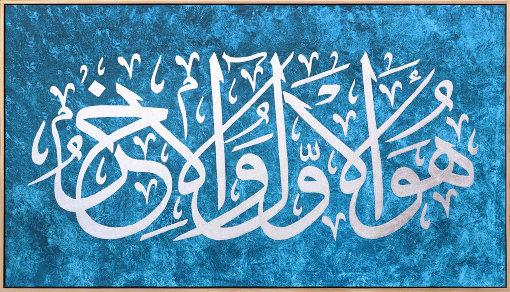
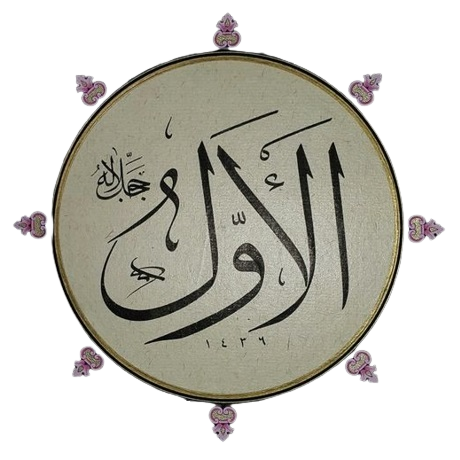
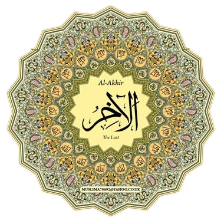

Hadid Suresinin ilk üç ayetinde 11 adet güzel isim okuyoruz: el-Azîz, el-Hakîm, el-Mâlik, el-Muhyî, el-Mumît, el-Kadîr, el-Evvel, el-Âhir, ez-Zâhir, el-Bâtın, el-Alîm. Bunların iki çifti iki günün konusu oluyor.
Her şeyin ilki olan el-Evvel ve sonu olan el-Âhir yalnız bu ayette geçiyor: 
Âlimler evvel ve âhir isimlerinin Kur’ân-ı Kerîm’de olduğu gibi beraberce kullanılmasının gerektiğini söyler. Çünkü bunlar yaratılmışlar için söz konusu edildiğinde diğer bir varlığa göre öncelik veya sonralık gibi belli bir zaman ifade ederse de Allah’a izâfe edilince muhtevalarında ne izâfet ne de öncelik ve sonralık düşünülebilir. Şu halde O’nun evveliyet ve âhiriyeti zamanın başlangıç ve sonuç sınırlarının üstünde oluşu, başka bir deyişle esasen mevhum veya sadece zihnî bir kavram niteliği taşıyan zamandan münezzeh bulunuşu demektir. Bu mânanın da ancak iki ismin beraber kullanılmasıyla elde edilebileceği kabul edilmiştir.
Kaynak: İslam Ansiklopedisi

Mesela, bir elmanın evveli elbette çekirdeğidir. Elma çürümeye bırakılırsa, bir ay gibi kısa zamanda yalnız çekirdekleri kalır. Demek ki, âhiri de yine çekirdek... Peki ya çekirdeğin evveli? "Elma" iyi bir cevap değil, çünkü ilk çekirdeğin nereden geldiğini açıklamıyor. "Allah'tan geldi" diyerek evvelini, "Allah'a dönecek" diyerek âhirini belirlemiş oluruz. 